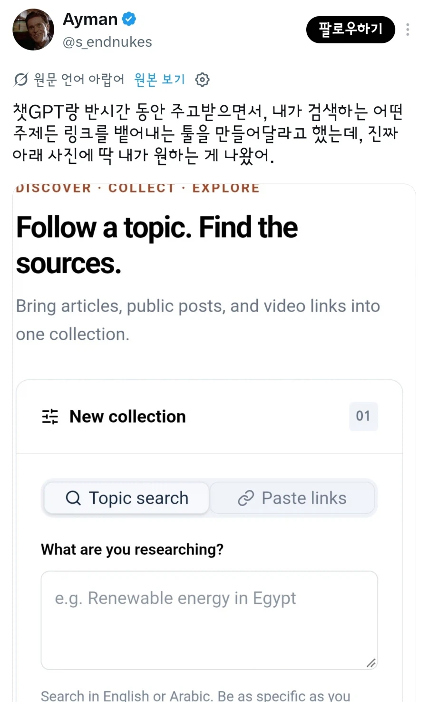

"내가 주제를 입력하면 그걸 찾아주는 사이트야"

"내가 주제를 입력하면 그걸 찾아주는 사이트야"
니가 생각하는건 다른 사람도 하는 생각이다

나 개쩌는거 만들었음ㅋㅋㅋ 너네만 봐라
localhost:8080
고맙다 이걸로 127.0.0.1 해킹해서 C드라이브 날려버렸다
젠장 이자식 내 컴퓨터의 야동은 어디간거냐?
야 아무리 그래도 욕망의 할머니 모음 사이트는 좀 아니지 않냐?
바퀴의 재발명 ㅋㅋ
난 진짜 세상에 없는거 유용한 툴 하나 만들었는데
배포해서 홍보하기 귀찮..
와 내가 개쩌는 아이디어 생각해냈음 -> 99%는 이미 존재함